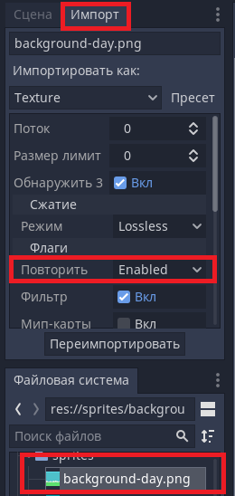
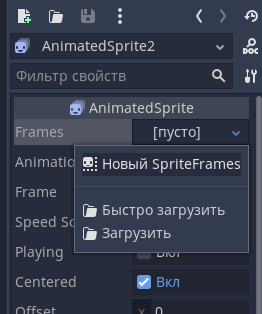

Настало время поговорить о Flappy Bird - игре, которая навела в своё время достаточно шума. Она известна настолько, что если вклиниться в разговор некоторой компании и заикнуться о Flappy Bird, то как-миниму один человек сразу поймёт о чём речь. Мы создадим отдалённый клон такой игры, правда, сделаем его в лёгком формате - без повышения уровней сложности, и, только с основными ресурсами, которые знакомы всем. Не будет ни цветков, ни красных труб, ни косых препятствий - только основная, первоначальная часть геймплея. Приступим!
Как обычно создаём проект, указываем нашей сценой Node2D (2D сцена), и загрузим в дерево ресурсов те ресурсы, которые будем использовать (пак с ресурсами возьмите из демо-проекта). Для начала нам понадобится фон - перетяните один из файлов фона (Background) в окно вьюпорта, и расположите его так, чтобы он был в левом верхнем углу. Посмотрите его ширину и высоту дважды кликнув на нём в доке файлов проекта - выставьте разрешение под размер этого спрайта, и выставьте режим растяжения в "2d" - "keep". Таким образом должно получиться так, что задний фон занимает всё пространство игры, и при разворачивании игры весь масштаб подгоняется под высоту или ширину окна сохраняя пропорции.
Хочется, чтобы фон двигался - птица летит. Давайте не будет учитывать силу и направление ветра - возьмём как факт что птица летит. Мы решим это довольно оригинальным способом. Для подобных трансформаций изображения у нас есть шейдеры.
Шейдеры, говоря абстрактно - специальные программы для видеокарты, исполняемые её процессором. Это некоторый набор инструкций, по которым видеокарта видоизменяет графическое представление определённых текстур при их отрисовке.То есть всё, что мы до этого делали (перемещения, отображение картинок и т.д.) - мы выполняли на процессоре. Процессор может делать тяжёлые и большие вычисления, но делает их достаточно медленно. Видеокарта же, которая выводит изображение, казалось бы, отвечает всего лишь за отрисовку происходящего, но нет - она уже делает это по определённым инструкциям. То есть да, она обладает вычислительными мощностями (здравствуй майнинг), но отличаются эти вычислительные мощности от процессора тем, что они маленькие, лёгкие, и в них допустима погрешность больше чем при процессорных вычислениях, но их ЗНАЧИТЕЛЬНО больше. Эти инструкции можно дополнять своими инструкциями таким образом, чтобы видеокарта, взяв изображение на отрисовку у процессора, изменило его определённым образом при отрисовке в соответствии с инструкциями, которые мы ей отдаём.
Что это значит? Это значит, что мы ей отдаём спрайт, и по факту он будет для всей системы недвижим - это будет статичная картинка. Но видеокарта будет его отрисовывать так, как будто он движется. Выглядит как магия? Сейчас Вы эту магию увидите!
Щёлкните на бэкграунд в доке файловой системы проекта, и смените вкладку дерева текущей сцены на вкладку импорта (материал по теме "Рабочая среда" -> "Интерфейс, настройка проекта"). В доке импорта измените флаг "Повторить" на "Enable". Этот параметр сделает так, чтобы картинка, при выходе объекта за пределы текстуры (за пределы изображения), повторялась. Без этого флага картинка не будет повторяться, а будет повторять лишь последние пикселы, которые были на краю изображения.
Теперь перейдём к созданию шейдера для фона - создадим многообещанную магию.
Для нашего спрайта фона в инспекторе свойств есть множество параметров, в том числе унаследованных от других, родительских типов узлов. Один из таких - CanvasItem, и он содержит свойство Material
В качестве материала создайте ShaderMaterial, а в качестве Shader - "Новый Shader", и... ОПЯТЬ КОД!!! Да, без этого никуда, но теперь нам придётся столкнуться с кодами шейдеров. Дело в том, что шейдеры имеют свой, собственный, немного поехавший, но всё же удобный язык. Реализуйте подобный пример кода, а я объяысню в комментариях что он значит:
shader_type canvas_item; #Для шейдеров существует необходимость указывать тип шейдера - spatial (для 3D), CanvasItem (для 2D), Particles (для систем частиц)
uniform vec2 shift = vec2(0.0, 0.0); # Указываем внешние координаты которые мы будем задавать. Эти координаты Вы можете увидеть, если в инспекторе, где задавали шейдер для объекта, посмотрите на ShaderParam.
void fragment(){ # Указываем функцию-обработчик. В данный момент функция названа фрагментом не просто так - есть предопределённые функции процессора, одной из таких является функция процессора фрагментов - это значит что операции, указанные в функции, будут применены к каждому видимому пикселю объекта.
COLOR = texture(TEXTURE, UV + shift); # COLOR - цвет пикселя, который мы задаём из текстуры со смещением. Текстурой является изображение спрайта.
}
Подробную информацию о шейдерах можете осмотреть ЗДЕСЬ.
На самом деле шейдеры - это искусство, благодаря которому создяются потрясающие визуальные эффекты. Но нам до этого далеко, так как это отдельная тема, которая достойна очередного обучающего курса.
А теперь обратите внимание, что у нас в шейдере задан параметр, который является двумерным вектором - Shift. Шейдеры не умеют самостоятельно считать сдвиги объектов сцены, и выполнять что-либо относительно логики сцены. У них есть некоторые параметры, такие как TIME - параметр, отвечающий за время исполнения. Некоторый таймер, на основе которого будет производиться определённое действие. Только этот параметр является одним из тех, которые мы не способны изменять самостоятельно. Мы же желаем управлять нашим шейдером из кода, поэтому будем сами задавать параметр смещения из кода. Создайте для объекта фона скрипт, и уже в нём обратитесь к шейдеру. Сделать это можно через обращение к материалу - material.set_shader_param("параметр", значения_параметра).
extends Sprite
var shift = Vector2(0, 0)
func _physics_process(delta):
shift.x += (100*0.0005)*delta # смещаем параметр, который передадим шейдеру
material.set_shader_param("shift", shift) # отдаём параметр шейдеру на отрисовку
Запустите код и проверьте, смещается ли изображение фона. Если изображение фона не смещается - убедитесь, правильный ли параметр Вы передаёте шейдеру, правильно ли называется этот параметр у шейдера, правильно ли описан шейдер, и есть ли шейдер вообще. Если картинка смещается, но при смещении становится одноцветной, либо продолжается полосками - проверьте настройки импорта изображения, параметр "Повторить".
Таким же образом реализуйте пол, но для пола коэффициент смещения задайте больше:
shift.x += (100*0.0035)*delta
material.set_shader_param("shift", shift)
Теперь вспомним момент, когда мы делали простенький платформер изучая программирование на GDScript, и создадим коллизии для пола, и для потолка чтобы птица не улетала вверх. Для этого создадим StaticBody2D, которому создадим дочерними CollisionShape в количестве двух штук. Расставить их нужно так, чтобы они покрывали ту площадь, где летает птица, но один CollisionShape2D должен быть размером с пол, а второй примыкает к границе игрового поля сверху - так мы ограничим птицу в перемещениях вверх и вниз.
Теперь нам остаётся сделать птичку, трубы, и подсчёт очков.
С трубами нет ничего трудного. Создайте новую сцену: Сцена -> Новая сцена -> Другой узел -> StaticBody2D. (вот именно для этого нужен параметр "другой узел" - чтобы иметь возможность делать на основе узлов префабрикаты, которыми мы будем пользоваться в дальнейшем). Ну и в этой сцене мы уже размещаем два спрайта трубы, один из них переворачиваем. Делаем два коллайдера размером с трубы. И расставляем трубы и коллайдеры так, чтобы через них теоретически могла пролететь птица (позже можно будет подправить редактируя эту сцену). Ну а для воспроизведения звука добавим небольшой Area2D, который будет небольшой полосочкой после труб, и добавим AudioStreamPlayer для того, чтобы воспроизвести счастливый звук преодолевания препятствия (поместите в него звук point.wav). Выглядит это примерно так:
Ну и, сделайте небольшой скрипт, который будет звук воспроизводить.
Сохраним сцену, и закроем её. Вернёмся к основной сцене, и теперь сделаем птичку! Сложного ничего нет, просто придётся слегка подзаморочиться с физикой.
Вставляем на сцену KinematicBody2d, и в него добавляем, внимание, AnimatedSprite! Анимированный спрайт отличается от обычного тем, что в обчыном используется одна картинка, а анимированный способен воспроизводить поочерёдно несколько картинок. Когда Вы добавили AnimatedSprite - он подсвечен жёлтым треугольником. В нём ещё нет набора кадров. Выделите его, и в инспекторе свойств добавьте новый набор кадров - SpriteFrames, после чего щёлкните по этому набору кадров, и внизу появится окно покадровой анимации. Опять же, от классического аниматора отличается тем, что у нас нет таймлайна и спецанимации свойств таких, как запуск функции или воспроизведение аудио.
Добавьте кадры анимации просто перетащив изображения птички в редактор покадровых анимаций. Так как у нас есть две конечных позиции - крылья подняты, и крылья опущены, я предпочёл повторить кадры с крыльями посередине таким образом, чтобы не возникало резких переходов от поднятых крыльев к опущеным, либо наоборот.
Сдвиньте AnimatedSprite к центру вьюпорта - слева сверху от игрового поля. Именно там сейчас находится центральная точка кинематического тела, и относительно этой точки будет производиться поворот. Для понимания сути происходящего выделите KinematicBody2D, и используя инструмент Scale повращайте его - птичка будет вращаться не вокруг своей оси, а вокруг оси KinematicBody2D. Именно поэтому важно сдвинуть сам спрайт в центр родительского объекта. Добавьте для птички коллайдер - уже не в первой, разберётесь, надеюсь. Ну и птичкам свойственно биться о стены, разбиваться, и махать крыльями - добавьте источники воспроизведения звука с соответствующими звуками.
Для KinematicBody2D пишем скрипт, в котором прежде всего необходимо определить музыкальные дорожки, чтобы птичка могла издавать сигналы по событиям. Ну а также необходимо учесть несколько физических величин относительно которых будет двигаться наша птичка, и запустить анимацию:
extends KinematicBody2D
onready var wing = $"wing"
onready var hit = $"hit"
onready var die = $"die"
var velocity = Vector2(0, 0)
export var gravity = 0.2
export var jumpforce = 5
var angle = 0
func _ready():
$"AnimatedSprite".play("default")
Ну а далее в _physics_process(delta) опишем логику полёта птички. ФизиксПроцесс отличается от процесса в том, что процесс запускается каждый кадр в то время, как физиксПроцесс запускается не чаще чем 60 раз в секунду. Использование дельты в обоих случаях позволяет минимизировать разрыв по временам обработки событий между слабыми и мощными устройствами - дельта корректирует логику основываясь на времени, затраченном на исполнении этой самой логики в предыдущий раз.
func _physics_process(delta):
var col = move_and_collide(velocity) # инициируем перемещение для определения столкновений
rotation = angle # присваиваем повороту угол
if Input.is_action_just_pressed("ui_select"): # Если пользователь нажал пробел
# делаем прыжок, поворачиваем птичку вверх, играем звук взмаха крыльев.
velocity.y = -jumpforce
angle = -0.8
wing.play()
velocity.y += gravity # добавляем гравитацию птичке
angle += 0.025 # поворачиваем птичку совсем чуть-чуть
if col: # если было столкновение
velocity = Vector2(0, 0) # обнуляем движение
hit.play() # играем звук удара и проигрыша
die.play()
set_collision_mask_bit(1, false) # отключаем коллизию
Тут есть один интересный момент - set_collision_mask_bit(бит_коллизии, значение). Данная функция позволяет отключить или включить определённые маски коллизий. Так сложилось, что для коллизий у нас есть маски и слои. Для понимания их работы нам необходимо запомнить следующее: Слой - где находится сам объект, маска - то, с чем сталкивается объект. То есть если он находится на слое 1 - с ним будут сталкиваться все объекты, у которых в маске столкновений стоит первый слой. Если у него стоит маска 2, то он будет сталкиваться с объектами, лежащими на втором слое. Объекты могут сталкиваться друг с другом. Можно сделать так, что первый объект сталкивается со вторым объектом, или наоборот.
Так мы сделаем некоторое правило. Выделив птичку задайте ей в инспекторе свойств маску такую, чтобы она сталкивалась со слоями земли и труб. А чтобы земля не сталкивалась с трубами - задайте для неё второй слой, и уберите первый слой коллизий.
Пробуем - птичка реагирует на нажатие клавиши "Пробел", сталкиваясь с землёй воспроизводит звуки проигрыша, но труб нет. Что мы упустили?
Мы создали трубы как сцену, но не указали их появление и исчезание. А делается это крайне просто. Добавьте для сцены нейтральный узел. Например, Node2D. Для него добавим скрипт, таймер с временным периодом в 2 секунды присоединённым к этому скрипту, и две точки Node2D - точку старта труб, перед птичкой, и точку исчезания труб - за экраном, за птичкой. Ну а скрипт прост:
extends Node2D
var pipe = load("res://Pipes.tscn") # укажите свою сцену с трубами
func _on_Timer_timeout():
add_child(pipe.instance()) # сцена, которую загрузили в память, является пока не более чем данными. Для того, чтобы она была подготовлена для помещения в дерево сцены - её необходимо "заинстансить".
Трубы добавляются, но по умолчанию в центр родительского объекта - надо это исправить. Откройте сцену с трубами, и редактируем скрипт в котором писали воспроизведение звука:
extends StaticBody2D
onready var start = get_node("../SpawnPoint") # Указываем имя точки старта
onready var end = get_node("../FreePoint") # Указываем имя точки уничтожения труб
onready var player = $"AudioStreamPlayer" # ранее мы это описывали для воспроизведения звука
func _ready(): # определяем позицию старта со случайным сдвигом по вертикали
randomize()
position = Vector2(start.position.x, randi()%251 + 80) # подкорректируйте сдвиг по вертикали под себя
func _physics_process(delta):
position.x -= 100 * delta
if position.x <= end.position.x:
queue_free()
func _on_Area2D_body_entered(body):
$AudioStreamPlayer.play()
Ну вот, теперь всё должно работать!
Ах да, мы почти забыли про очки. Давайте я подскажу Вам как сделать так, чтобы использовать буквы-картинки из оригинальной игры для очков. Есть два типа шрифта - один растровый, другой векторный. Так вот, в случае с векторными шрифтами нам нет необходимости париться о качестве шрифта - достаточно его вставить в качестве объекта шрифта в формат текстового поля в инспекторе свойств, и достаточно, но есть одно но - он в любом случае будет растеризован, и превратится в BitMap шрифт при сборке. Что же такое BitMap шрифт? BitMap шрифт - это шрифт, который исполнен в виде изображений. Какие есть различия в их использовании? Для BitMap шрифта необходимо определить в каком квадрате находится каждая из букв. Но мы сделаем проще - из AssetLib установите дополнение, которое называется BitmapTextureFont.
Суть этого дополнения такова: у Вас есть некоторые буквы, которые нарисованы в графическом редакторе. Вам необходимо объединить эти буквы в одно изображение, расположив их последовательно друг за другом в прямоугольниках одинакового размера. В доке файловой системе проекта правый клик мыши - новый ресурс - BitmapTextureFont, и открываем свойства этого ресурса. Туда загружаем картинку, указываем ширину и высоту одного символа - он разобъёт изображение на блоки равного размера. У Вас должно получиться так, чтобы символы вмещались ровно в блоки. После этого стоит напечатать символы в той последовательности, в которой они находятся на картинке. Попробуйте проделать это со шрифтом, который присутствует в ресурсах проекта, и, создав узел типа Label, присоедините к нему созданный шрифт.
Вуаля! Теперь место, где будет располагаться счёт по количеству труб, которые пролетел игрок, организовано, и осталось совсем чуть-чуть:
Задание: